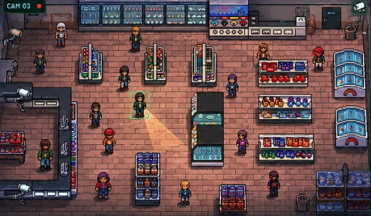
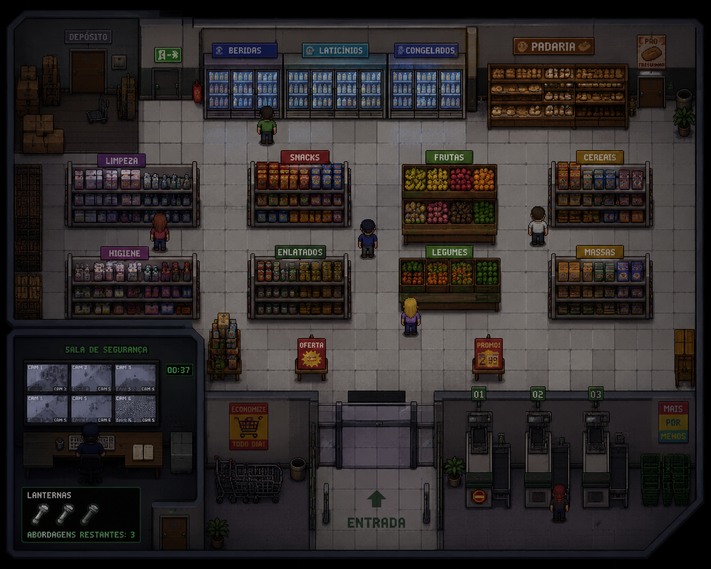
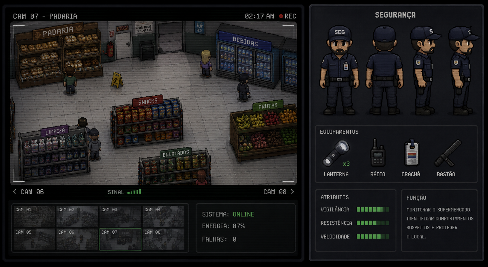

Jogo
"Turno da Noite: Quem é o Ladrão?" ("Night Watch: Who's the Thief?") é um jogo top-down de suspense e investigação em que o jogador controla um segurança noturno dentro de um supermercado fechado. Utilizando câmeras e observação, o objetivo é identificar o ladrão escondido entre os clientes antes de ser atacado. Conforme as fases avançam, a dificuldade aumenta com falhas nas câmeras, luzes piscando e NPCs mais difíceis de analisar.

Resumo da Gameplay
Durante a madrugada, diversos NPCs entram no supermercado realizando ações aparentemente normais, como andar pelos corredores, observar produtos e interagir com as prateleiras. No entanto, entre eles, um personagem é definido secretamente como o ladrão, apresentando comportamentos suspeitos de forma sutil, como evitar áreas monitoradas, permanecer em locais isolados e acumular itens sem seguir até o caixa. O jogador deve utilizar as câmeras de segurança e a exploração direta do mercado para analisar padrões de comportamento e identificar o suspeito antes que seja tarde. Ao longo da partida, o segurança pode abordar apenas três pessoas, tornando cada decisão importante para a sobrevivência. Conforme as fases avançam, a dificuldade aumenta gradualmente: o número de clientes cresce, o ladrão se torna mais inteligente e imprevisível, as luzes começam a falhar e as câmeras passam a apresentar interferências. Esses elementos criam uma atmosfera de tensão constante, exigindo atenção, estratégia e rapidez para manter o controle do supermercado durante todo o turno da noite.


Fases da Gameplay
Fase 1 — Primeiro Turno
O supermercado está relativamente calmo e possui poucos clientes circulando. O ladrão apresenta comportamentos suspeitos mais simples, permitindo que o jogador aprenda a usar as câmeras, a lanterna e o sistema de abordagem.
Fase 2 — Movimento Suspeito
O número de NPCs aumenta e o ladrão começa a evitar áreas iluminadas e câmeras de segurança. O jogador precisa prestar mais atenção nos corredores e no tempo que cada personagem permanece em determinados setores.
Fase 3 — Falhas no Sistema
As câmeras passam a apresentar interferências temporárias e algumas luzes começam a piscar pelo supermercado. A visibilidade reduzida aumenta a tensão e dificulta a identificação correta do suspeito, o jogador deve administrar cuidadosamente as lanternas restantes para não ficar completamente vulnerável no escuro.
Fase Final — Último Turno
Todas as mecânicas anteriores se intensificam ao máximo. As falhas elétricas são constantes, as câmeras desligam por períodos maiores e o ladrão pode agir de forma muito mais rápida, exigindo observação, estratégia e precisão para sobreviver até o fim do turno.